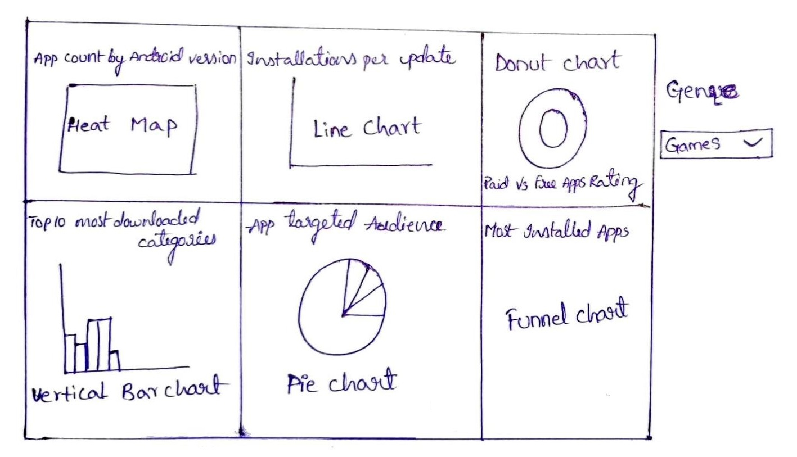
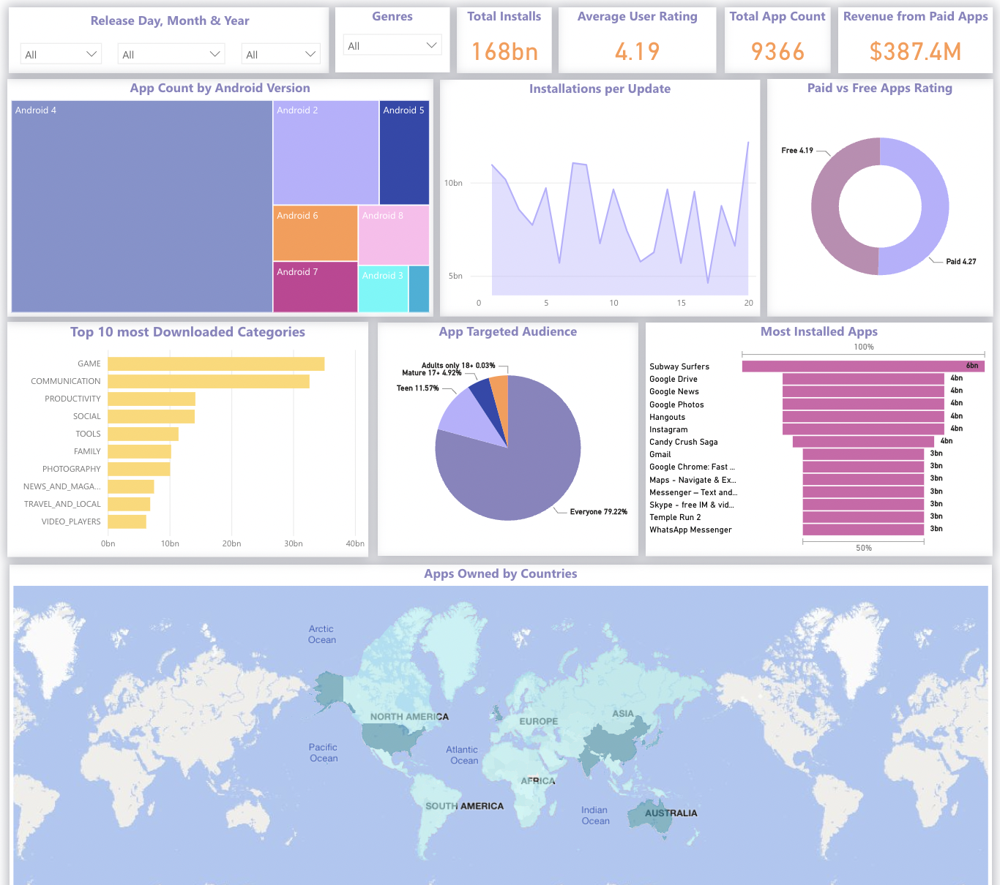

About
| Title: | Visualization Poject 2 - Google Play Store Apps Analysis |
| Team Members: | Arunodhaya Reddy Chityala, Balaji Rao Solanki, Sai Kiran Butti, Tejaswini Parlapalli. |
| Advisor: | Dr. Khairi Reda |
Introduction
Android is one of the major operating systems in the market with billions of user base. To ease users'
everyday activities there exists many apps in the Google Play store as their primary download resource.
With the increase in the number of applications available in the play store, there exists some confusion
among users. Our primary goal of the project is to create visualizations that help the users select
appropriate apps based on their requirements and also to help manufacturers understand the trends of app
usage based on factors like app category, reviews, price, ratings, and installs. We made interactive
visualizations for each of the above elements which can be filtered by the users and have added various
charts to understand the choice of customers on their selections.
Dataset Description
Google Play store and app store have millions of downloads every day and to help users identify the apps
they are looking for among the thousands of apps present, we wanted to develop a Power Bi visualization
that details and presents various options giving the user a chance to filter in the apps as per their
requirements. Our dataset consists of data in CSV format which includes a CSV file of 9660 unique app
values with details of the category they belong to, ratings, reviews, size, installs, prizes, and genres
of the apps. Our dataset consists of about 9.0 MB with various values needed to implement the
visualizations and has been extracted from Kaggle.
Dashboard Design
Initial Design
Our plan was to make easily understandable and effective visualizations. So we initially thought of
adding all the visualizations in a singular box format without the need to shift to other pages to
have ease of access. Once we were clear on the types of charts to add we thought of adding filters
to the side as in the below picture. We then came across a few blockers as we needed additional
pages and adding side-by-side filters became a challenge.

Final Design

Next, In the final layout, we added scorecards of the data along with the dropdown filter based on
Release Day, month, and year to help visualize and understand the patterns of users. In the left top
layout, the heat map is replaced with a tree map, the Bar chart is changed to a vertical bar chart.
A World map is also added to display information about the number of applications owned by each
country.
Questions
Insights From Visualization
From the visualizations created, we are able to conclude the below observations:
- From the first chart, the Majority of the updates belonged to gaming apps, which made sense as new features would be released as a new version update for this genre.
- With the release of a new version, the installations vary unevenly, based on the performance of the updates.
- From the donut chart, we were able to decipher the most paid apps belonged to the family genre, for example, people preferred to buy family games to play together.
- From the categories bar chart and target audience pie chart we can observe that gaming apps as expected have mostly targeted teenagers and youngsters.
- For each installation, we were also able to note the total number of installations, user ratings, and app counts with the help of scorecards.
Takeaways From Class
With the help of the project and course, we were able to understand how to visualize the data
effectively and make necessary analyses from it. We were able to perform data cleaning and data
aggregations for visuals while choosing colors and designs that would elevate the insights we wished to
share, without deviating from the data itself. Additionally, we were able to reduce unnecessary junk
additions and make concise charts for the visuals.
Team Members Contribution
Arunodhaya Reddy Chityala
- Worked on data set collection and cleaning.
- Worked on the target audience and paid vs free rating charts.
- Answered the questions related to the above charts in the documentation.
Balaji Rao Solanki
- Worked on installations per update chart.
- Added filters for genres, time, and rating.
- Embedded the Power BI code in the HTML application.
- Worked on consolidating all charts and documentation.
Sai Kiran Butti
- Worked on App count by Abdroid version chart.
- Worked on Scorecards for total installations chart.
- Worked on average user rating, total app counts charts.
- Did final evaluation and changes and worked on documentation.
Tejaswini Parlapalli
- Worked on data set collection and cleaning.
- Embedded the Power BI code in the HTML application.
- Worked on most installed apps chart.
- Did final evaluation and changes
- Worked on documentation and video presentation.
References
- Power BI on Microsoft Learn
- Power BI Tutorial on Tutorialspoint
- Bootstrap Components